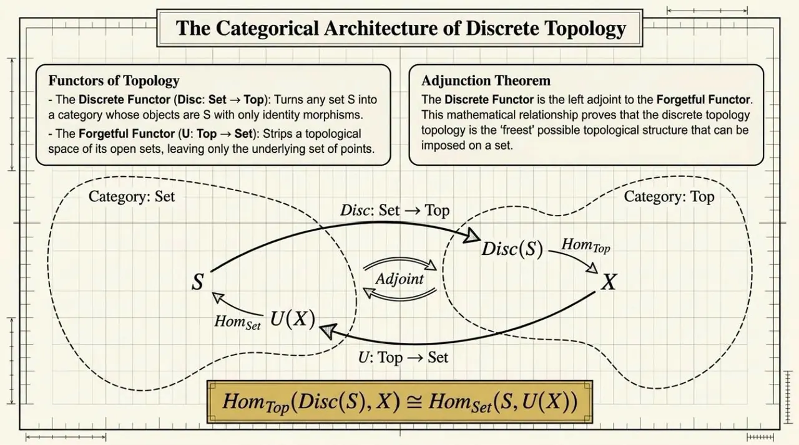

기둥 3 · 끝에서 보는 법 · 12장
함자와 짝 — 옷 입히기와 옷 벗기기
이산 위상이 「가장 자유로운」 위상인 이유
이산 위상이 「가장 자유로운」 위상인 이유
핵심 질문 — 집합에 「이산 위상 옷」을 입히는 것과 공간의 「위상 옷을 벗기는 것」은 왜 서로 짝일까?
기둥 3에서는 공간들을 한 발 물러서서 「공간들의 세계」로 봐요. 한 세계(집합)에서 다른 세계(위상 공간)로 옮기는 번역기를 함자라 해요. 집합에 이산 위상을 입히는 함자와 위상을 벗기는 함자는 「짝(수반)」을 이루는데, 그 뜻은 「연결 함수 개수가 같다」는 간단한 숫자 등식이에요.
숫자 요약은 이 장의 예시 계산에서 나온 값입니다(실제 데이터가 아닌 설명용 값).
조별 토론입니다. 이산 위상은 「정보가 가장 많은가」, 「제약이 가장 없나」?
…둘 다 맞는 것 같은데.
행렬·벡터, 복잡한 공식을 몰라도 됩니다. 그림을 움직여 보고, 밑줄 친 말을 누르면 뜻이 나옵니다.
이 페이지 사용법: 밑줄 친 말을 누르면 뜻이 나옵니다(Esc로 닫기). 단계마다 그림을 직접 움직여 보고, 끝의 확인 퀴즈로 점검하세요. 앞 장: 11 갈루아 대응 — 덮개와 부분군의 짝짓기
토론 주제: 「이산 위상은 가장 정보가 많은 위상인가, 가장 제약이 없는 위상인가?」 1조는 「정보가 많다」, 2조는 「제약이 없다」 쪽으로 근거를 모아요. 박사가 두 말이 같은 이야기임을 정리합니다.
열린 집합이 제일 많으면 연속 조건이 제일 까다로울 것 같은데요?
거꾸로예요! 출발 쪽에 열린 집합이 많으면 오히려 쉬워져요.
이산 위상의 특별함을 「짝(수반)」이라는 한 문장으로 표현해요.
13장 스톤-체흐, 14장 프로유한 공간이 모두 「세계 사이의 번역기」로 정의돼요.
「열린 집합의 역상이 열림」이라는 연속의 정의를 손으로 검사해 보는 기회예요.
「범주」, 「함자」, 「수반」은 대학원 수학의 말이지만, 오늘은 「번역기」와 「함수 개수 세기」로만 다룹니다.
상황 질문 — 인형(집합)에 옷(위상)을 입히는 방법이 여러 가지라면, 「아무 장식도 없이 가장 단순하게」 입히는 방법은 무엇일까요?
인형에게 옷을 입히는 가장 단순한 규칙은 「모든 단추를 다 연 옷」이에요. 옷을 벗기면 인형 자체만 남아요.
함자는 세계(범주)의 대상과 화살표(함수)를 규칙에 맞게 다른 세계로 옮기는 번역기예요. 이산 함자 Disc: Set → Top은 집합에 이산 위상을 입히고, 망각 함자 U: Top → Set은 위상을 잊고 점들만 남겨요.
카드를 차례로 눌러 두 번역기가 무엇을 하는지 보세요.
옷을 입혔다 벗기면 원래대로니까, 두 번역기는 서로 반대예요!
집합 → 공간 → 집합은 원래대로 맞아. 그런데 공간 → 집합 → 공간도 원래대로일까?
원자료 「The Categorical Architecture of Discrete Topology」 왼쪽 위 상자: 이산 함자와 망각 함자.

상황 질문 — 모든 문이 열려 있는 집에서는, 손님이 어느 방으로 가든 「문이 잠겨 못 간다」는 일이 생길까요?
「역상이 열려 있다」는 걸 어떻게 확인해요?
학교 수학으로 보면: 중학교 함수의 「거꾸로 찾기」예요. f(x)가 어떤 집합 안에 떨어지는 x를 모두 모아 보면 돼요.
| 식 조각 | 읽는 법 | 뜻 |
|---|---|---|
| f⁻¹(V) | 에프 역 브이 | f로 보냈을 때 V 안에 떨어지는 출발점 전부 |
| f 연속 | 도착 쪽 모든 열린 V에 대해 f⁻¹(V)가 출발 쪽에서 열림 | |
| Hom_Top(A, B) | A에서 B로 가는 연속 함수 모음 |
출발 S = {a, b, c}, 도착 X = {1, 2, 3} (열린 집합 ∅, {1}, X)
f: a→2, b→1, c→3이면 f⁻¹({1}) = {b}
S가 이산이면 {b}는 열림 → 연속
S가 밀착이면 {b}는 안 열림 → 불연속
출발 쪽 문이 다 열려 있으면 검사할 게 없네요. 이산 = 제약 없음이 이해돼요.
모든 문이 열린 집에서는 어느 방으로 가는 길도 막히지 않아요. 문이 거의 다 잠긴 집(밀착)에서는 대부분의 길이 막혀요.
연속의 정의: 도착 공간의 모든 열린 집합 V에 대해 f⁻¹(V)가 출발 공간에서 열려 있음. 출발이 이산 공간이면 모든 부분집합이 열려 있으니 모든 함수가 연속 함수예요.
f(a), f(b), f(c)를 바꿔 보고, 출발의 옷을 이산과 밀착으로 바꿔 보세요.
이산은 열린 집합이 8개나 돼서 검사가 8배 어려우니 불연속이 많겠죠!
검사는 도착 쪽 열린 집합마다 해. 출발 쪽이 많으면 통과가 쉬워져.
상황 질문 — 「이산 옷을 입힌 S에서 X로 가는 연속 함수」와 「S에서 옷 벗긴 X로 가는 그냥 함수」를 세면, 개수가 같을까요?
≅ 기호는 = 이랑 뭐가 달라요?
학교 수학으로 보면: 「같은 개수로 하나씩 짝지을 수 있다(일대일 대응)」는 뜻이에요. 중학교 「일대일 대응」과 같아요.
| 식 조각 | 읽는 법 | 뜻 |
|---|---|---|
| Hom_Top(Disc(S), X) | 이산 S에서 X로 가는 연속 함수 모음 | |
| Hom_Set(S, U(X)) | S에서 X의 점들로 가는 그냥 함수 모음 | |
| ≅ | 일대일 대응 | 둘을 빠짐없이 하나씩 짝지을 수 있음 |
| Disc ⊣ U | 디스크 왼쪽 수반 유 | Disc가 U의 왼쪽 짝 |
S의 점 2개, X의 점 3개: 그냥 함수 3² = 9개
이산 S에서 나가는 연속 함수도 9개 (2단계: 전부 연속)
점 3개면 27 = 27, 점 4개면 81 = 81
밀착 S에서 나가는 연속 함수는 더 적음 → 이산만 이 등식을 만족
개수가 딱 맞는 건 이산 옷일 때뿐이네요. 그래서 이산이 U의 「짝」이구나.
열쇠 꾸러미(연속 함수)와 자물쇠 꾸러미(그냥 함수)가 하나씩 정확히 짝지어지면, 둘 중 하나만 세어도 다른 쪽 개수를 알 수 있어요.
수반 Disc ⊣ U: 모든 집합 S와 공간 X에 대해 Hom_Top(Disc(S), X) ≅ Hom_Set(S, U(X))가 자연스럽게 성립해요. 그래서 이산 위상은 집합에 줄 수 있는 「가장 자유로운」 위상이에요(자유 대상).
S의 점 개수와 X의 옷을 바꾸며 두 개수가 늘 같은지 보세요.
함수 개수는 3ˢ이니까, 결국 둘 다 3ˢ이죠? 너무 쉽네요!
맞아. 그런데 밀착 S로 바꾼 줄도 봐. 그 줄은 왜 3ˢ이 아니지?
원자료 오른쪽 위 「Adjunction Theorem」과 맨 아래 Hom 등식, 가운데 두 세계(Set, Top) 그림.
X1이 AI에게 「이산 공간으로 들어가는(도착하는) 함수도 모두 연속인가요?」라고 물었어요.
「출발」과 「도착」을 바꾸면 결론이 정반대가 되는 정리가 많아요. AI 답에서 방향이 바뀌지 않았는지 꼭 확인하세요.
출발 = 이산 공간 {a, b, c}, 도착 = 시에르핀스키 공간 {1, 2, 3}(열린 집합 ∅, {1}, 전체). 가능한 함수 27개를 모두 검사!
「하나도 없어. 출발이 이산이면 전부 연속이야.」
「27개나 되면 하나쯤은 불연속이 있겠죠!」
누가 맞을지 먼저 예상해 보고 단추를 누르세요. 판정은 계산 결과로만 합니다.
개념정리 흐름: 함자 (이산 함자와 망각 함자) → 이산 공간에서 나가는 함수의 연속성 → 이산–망각 수반
| 개념 | 한 줄 뜻 | 일상 비유 | 비유의 한계 |
|---|---|---|---|
| 함자 | 세계 사이의 번역기 | 옷 입히기·벗기기 | 실제 옷과 달리 함수도 함께 번역해야 함 |
| 망각 함자 U | 위상을 잊고 점만 남김 | 옷 벗기기 | 벗겼다 다시 입히면 원래 공간이 아닐 수 있음 |
| 연속 함수 | 열린 집합의 역상이 열림 | 열린 문으로 가는 길 | 방향(출발/도착)에 따라 이산의 효과가 정반대 |
| 수반 Disc ⊣ U | Hom(Disc S, X) ≅ Hom(S, U X) | 짝 맞는 열쇠와 자물쇠 | 개수뿐 아니라 자연성까지 필요 |
토론 정리: 「정보 최대(1조)」와 「제약 없음(2조)」은 같은 동전의 양면이에요. 둘 다 정답!
…둘 다 맞다고 했잖아.
열린 집합이 많을수록 출발이 자유로워지는 거, 이제 이해했어요.
27개 중 하나쯤은… 없었네요.
다음 장 예고: 13장 찬반 토론에서는 무한 끝에 점을 붙이는 「울트라필터」와, 가장 넉넉한 콤팩트화인 「스톤-체흐」를 다뤄요.